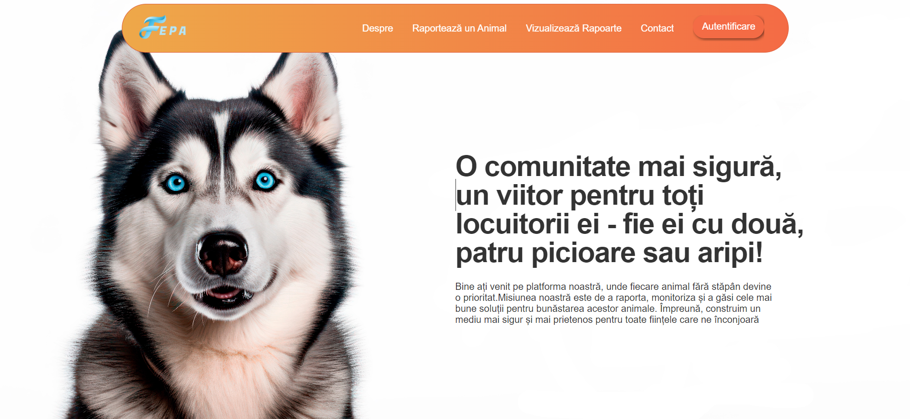
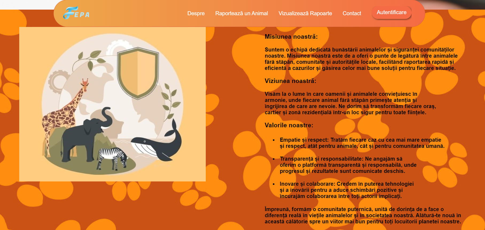
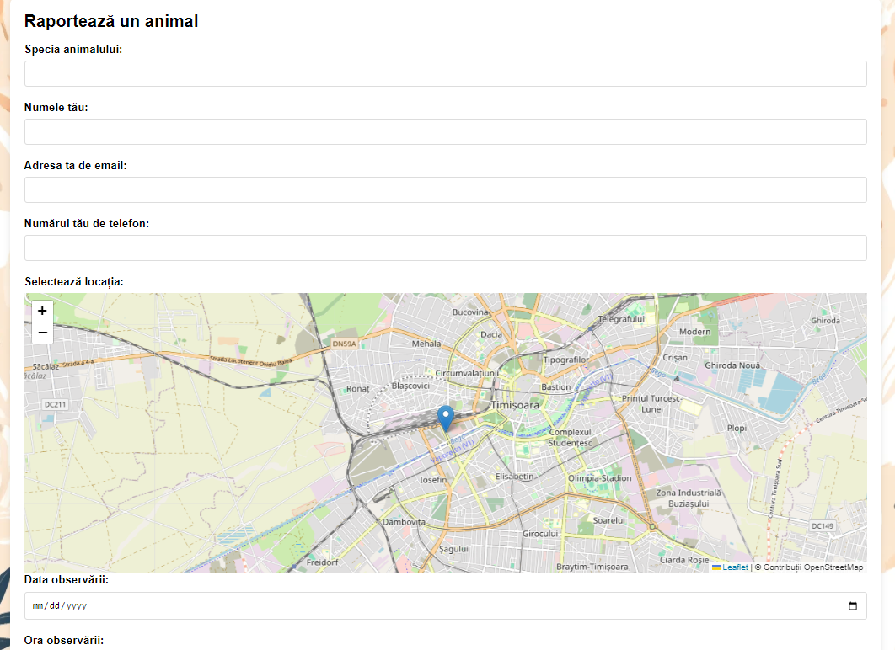
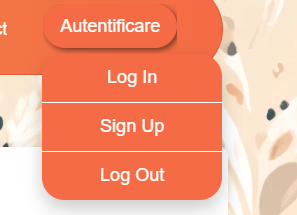

FEPA
Feral Presence Adviser
- Rezumat
- Introducere
- Descriere generală
- Interfața aplicației
- Caracteristicile sistemului
- Cerințe nefuncționale
- Referințe
Autori
- Moglan Andreea Elena
- Cărpușor Flavia Andreea
1. Rezumat
Proiectul FePA (Feral Presence Adviser) este o platformă web avansată dedicată monitorizării și gestionării prezenței animalelor fără stăpân în medii urbane și rurale. Utilizatorii pot raporta observații ale acestor animale, furnizând detalii precum locația, fotografii, descrieri și informații suplimentare despre comportament sau probleme de sănătate. Platforma este dotată cu funcționalități de analiză și generare de statistici, oferind rapoarte detaliate despre frecvența și natura interacțiunilor animalelor cu mediul uman, pe zile, zone, și specii. Datele pot fi exportate în formate diverse, inclusiv HTML, CSV și PDF, iar fiecare raport nou este, de asemenea, disponibil ca flux de știri RSS. Aceasta permite o diseminare rapidă și eficientă a informațiilor către toți utilizatorii interesați. FePA îmbină tehnologia modernă cu necesitatea de a gestiona și de a interacționa responsabil cu fauna urbană și rurală, asigurând o coexistență armonioasă și sigură între oameni și animalele fără stăpân.
2. Introducere
2.1 Scopul aplicatiei
Documentul de față definește cerințele software pentru FEPA (Feral Presence Adviser), un sistem avansat destinat monitorizării animalelor fără stăpân în medii urbane și rurale. Scopul principal al acestui sistem este de a furniza autorităților locale și organizațiilor de protecție a animalelor uneltele necesare pentru a gestiona eficient și uman populațiile de animale sălbatice, minimizând conflictele dintre acestea și comunitățile umane.
2.2 Convențiile documentului
Acest document este redactat conform standardelor IEEE pentru specificații ale cerințelor software, folosind terminologia specifică domeniului de monitorizare a faunei și gestionare a datelor. Utilizăm fontul "Georgia" pentru textul descriptiv și "serif" pentru elementele de cod sau referințe cu dimensiune de 15px pentru a facilita citirea și pentru a distinge clar între diferitele tipuri de conținut. Informațiile critice sunt evidențiate prin bold. și italic. Acolo unde este cazul, se utilizează buline pentru a organiza listele de funcții sau cerințe pentru claritate și ușurința de lectură.
2.3 Publicul vizat și sugestii de lectură
- Dezvoltatorii și testerii vor găsi utile secțiunile care detalizează funcțiile sistemului și interfațele externe, precum și cerințele tehnice specifice.
- Managerii de proiect și decidenții pot consulta viziunea globală a produsului și obiectivele acestuia, pentru a înțelege cum FEPA se aliniază la strategiile organizaționale.
- Utilizatorii finali și organizațiile de protecție a animalelor vor aprecia descrierea funcționalităților orientate spre utilizator și impactul lor în îmbunătățirea bunăstării animalelor.
- Partenerii și colaboratorii externi ar trebui să revizuiască interfețele de comunicații și modalitățile de integrare cu alte sisteme.
- Investitorii și sponsorii pot înțelege beneficiile pe termen lung ale sistemului și potențialul său de a contribui la obiectivele de sustenabilitate și responsabilitate socială.
2.4 Domeniul de aplicare al produsului
FEPA se angajează să creeze un sistem web intuitiv și adaptabil care să faciliteze raportarea și monitorizarea animalelor fără stăpân în diverse medii, inclusiv zone urbane și rezidențiale. Scopul este de a asigura că fiecare caz este gestionat cu eficiență și empatie, contribuind la o coexistență armonioasă între comunitățile umane și animale.
- Facilitarea raportării rapide a animalelor fără stăpân prin intermediul unei interfețe web prietenoase și accesibile.
- Oferirea de statistici și analize detaliate privind situația animalelor, cu scopul de a informa comunitatea și a sprijini procesul de luare a deciziilor.
- Generarea de rapoarte și vizualizări personalizate, care permit utilizatorilor să înțeleagă mai bine datele și să contribuie activ la soluții.
- Exportul datelor și statisticilor în diverse formate cum ar fi CSV, PDF și HTML, ușor de partajat și utilizat în alte contexte.
- Integrarea unui flux de știri RSS, asigurând că utilizatorii sunt permanent actualizați cu cele mai recente cazuri și evoluții legate de animalele fără stăpân.
3. Descriere generală
3.1 Perspectiva produsului
Proiectul FEPA (Feral Presence Adviser) este dezvoltat ca un sistem interactiv și flexibil pentru monitorizarea și gestionarea animalelor fără stăpân în zone urbane și rurale, folosind tehnologii web moderne pentru a oferi utilizatorilor o experiență optimizată și interactivă.
- 'index.html': Pagina principală a site-ului, cu o interfață prietenoasă și acces la toate funcționalitățile principale.
- 'about.html': Oferă informații despre scopul și funcționarea sistemului FEPA.
- 'contact.html': Permite utilizatorilor să trimită întrebări sau să solicite suport.
- 'login.html', 'logout.html', 'signup.html': Gestionarea autentificării și a înregistrării utilizatorilor.
- 'report.html': Pagina pentru raportarea observațiilor noi.
- 'view-reports.html': Permite utilizatorilor să vizualizeze rapoartele existente.
- Raportare Simplificată: Utilizatorii pot raporta ușor prezența animalelor fără stăpân, inclusiv locația, descrierea și fotografiile corespunzătoare.
- Vizualizare Rapoarte: Există posibilitatea de a vedea toate rapoartele trimise, cu detalii complete despre fiecare caz în parte.
- Gestionare Utilizatori Utilizatorii se pot înregistra, autentifica și gestiona propriile profiluri în cadrul sistemului.
- Exportul datelor și statisticilor Datele pot fi exportate în formate diverse pentru analiză suplimentară sau arhivare.
- Statistici și Analize Sistemul generează statistici complexe legate de datele colectate, oferind o perspectivă asupra tendințelor și situației curente.
- 'index.html': Oferă o vedere generală a sistemului, cu linkuri rapide către celelalte secțiuni ale site-ului..
- 'about.html': Descrie detaliat misiunea și viziunea proiectului FEPA.
- 'contact.html': Formular de contact pentru comunicare directă cu echipa de suport.
- 'login.html', 'logout.html', 'signup.html': Formulare pentru gestionarea accesului utilizatorilor.
- 'report.html': Permite utilizatorilor să introducă noi rapoarte, inclusiv detalii despre observații.
- 'view-reports.html': Afisează rapoartele existente într-un format ușor de accesat și analizat.
- Administrația Publică: Oficialii responsabili cu gestionarea animalelor fără stăpân vor folosi FEPA pentru a urmări și coordona activitățile de intervenție. .
- Cetățeni și Voluntari: Indivizii care raportează observații despre animalele fără stăpân. Sunt interesați de o interfață simplă pentru introducerea rapidă a rapoartelor și de posibilitatea de a urmări rezoluția acestor cazuri.
- Organizații Non-Guvernamentale (ONG-uri): Grupuri care lucrează în domeniul protecției animalelor și care vor utiliza FEPA pentru a organiza campanii de conștientizare și pentru a mobiliza resurse și voluntari.
- Profesioniști în Sănătatea Animalelor: Veterinari și experți în sănătatea animalelor care pot folosi sistemul pentru a urmări incidentele de sănătate publică legate de animalele fără stăpân și pentru a coordona acțiuni de prevenție și tratament.
- Raportări: În această secțiune, puteți raporta observațiile despre animalele fără stăpân, atașând fotografii și descrieri detaliate.
- Rapoarte Vizualizate: Aici puteți vizualiza toate rapoartele trimise de utilizatori, cu posibilitatea de a filtra informațiile în funcție de specie, locație sau data raportării.
- Suport și Asistență: Dacă întâmpinați dificultăți sau aveți întrebări, secțiunea Contact vă stă la dispoziție pentru a lua legătura cu echipa noastră de suport
- Statistici: Secțiunea oferă acces la analize și grafice care prezintă tendințele și distribuția observațiilor în diferite perioade și locații.
Frontend:
Tehnologii Utilizate: HTML și CSS.
Pagini:
CSS:
Fiecare pagină HTML este stilizată pentru a reflecta funcționalitatea și conținutul său, cu fișiere CSS specifice cum ar fi home.css, contact.css, report.css etc., asigurând o interfață coerentă și adaptivă.
3.2 Funcțiile produsului
Sistemul FEPA oferă o gamă largă de funcții menite să îmbunătățească gestionarea și monitorizarea animalelor fără stăpân. Printre acestea se numără:
3.3 Funcționalitățile Paginilor Web
3.4 Clasele și caracteristicile utilizatorilor
3.5 Documentația utilizatorului
Pagina principală va fi afișată, cu informatii referitoare animale fara stapan, statistici și înregistrare. Pentru a accesa funcționalitățile complete ale site-ului, utilizatorul va trebui să se înregistreze. În acest sens, utilizatorul va selecta butonul de autentificare și va completa formularul cu informațiile necesare. După finalizarea înregistrării, utilizatorul putea accesa toate funcționalitățile site-ului:
4. Interfața aplicației
4.1 Interfața cu utilizatorul
Aplicația FEPA prezintă o interfață prietenoasă și intuitivă, concepută pentru a facilita interacțiunea utilizatorilor cu sistemul. Pagina principală oferă o imagine de ansamblu a funcționalităților cheie, permisând utilizatorilor să navigheze ușor către activitățile dorite.
- Pagina "FEPA"  În această secțiune este prezentată o descriere succintă a paginii înainte ca utilizatorul să se autentifice, oferind, de asemenea, un ghid de folosință. De asemenea, se pot viziona cele mai recente rapoarte prin intermediul unui "scrolling carousel", folosind fluxul RSS. Header-ul reprezintă o modalitate simplă de a face tranziția între pagini, fiind accesibil oriunde rapid, ușor și intuitiv.
- Pagina "Despre"  Este dedicată prezentării misiunii, viziunii și valorilor organizației. Aici, utilizatorii pot găsi informații esențiale despre obiectivele FEPA și modul în care contribuie la comunitate.
- Pagina "Raportează un animal"  Această pagină este esențială pentru funcționalitatea sistemului FEPA, permițând utilizatorilor să raporteze observații legate de animalele fără stăpân. Interfața include câmpuri pentru introducerea datelor și informațiilor necesare raportării.
- Harta Interactivă: O hartă permite utilizatorilor să selecteze sau să indice locația precisă unde a fost observat animalul. Funcționalitatea de zoom și navigare ajută la stabilirea coordonatelor exacte.
- Câmp de Descriere: Un spațiu larg este destinat descrierii situației, unde utilizatorii pot oferi detalii suplimentare despre comportamentul animalului sau alte observații relevante
- Încărcare Fotografie: Opțiunea de a încărca fotografii permite atașarea de dovezi vizuale care susțin raportul.
- Câmpuri de Introducere a Datelor: Utilizatorii pot completa detalii precum: specia animalului, numele si detaliile de contact ale raportului.
- Pagina "Vizualizare rapoarte"
- Pagina "Autentificare"  Această secțiune include un meniu dropdown care oferă linkuri către paginile: "Log In", "Sign In" și "Log Out", unde se găsesc formularele specifice. Alegerea unui dropdown a fost motivată de dorința de a include mai multe opțiuni într-un spațiu compact. Folosirea unui meniu dropdown poate facilita navigarea pe site și poate oferi o experiență mai intuitivă pentru utilizatori.
- Laptop-uri și desktop-uri care pot rula un browser web și au acces la internet.
- Tablete și telefoane mobile care rulează un sistem de operare (cum ar fi iOS sau Android) și pot accesa internetul prin intermediul unui browser web.
- Interacțiunea dintre utilizator și aplicație se realizează prin intermediul unui browser web, care este software-ul utilizatorului.
- Utilizatorul poate interacționa cu aplicația prin intermediul mouse-ului și tastaturii, în cazul laptop-urilor și desktop-urilor, sau prin intermediul ecranului tactil, în cazul tabletelor și telefoanelor mobile.
- Datele sunt preluate și afișate în interfața aplicației web, care este o interfață software.
- Aplicația utilizează protocoalul de comunicare HTTP, pentru a asigura securitatea și integritatea comunicării dintre client și server.
- Interacțiunea dintre client și server are loc prin intermediul API-ului dezvoltat intern.
- API REST/GraphQL : Acest API va fi dezvoltat pentru a manipula datele despre animalele raportate, utilizatori și rapoartele generate. Va include endpoint-uri pentru adăugarea, actualizarea, ștergerea și preluarea informațiilor despre animale, utilizatori și evenimentele raportate, utilizând verbe HTTP adecvate și schema de date clar definită.
- API-ul REST/GraphQL: Acesta va fi folosit pentru a prelua și controla datele referitoare la redarea știrilor privitoare la fiecare nominalizat în parte la SAG Awards. Acesta va avea definiții clare pentru endpoint-uri, verbe HTTP și tipuri de date acceptate și returnate.
- API pentru interacțiunea cu servicii externe de hărți și localizare: Acest API va interacționa cu servicii externe, cum ar fi Leaflet, pentru a gestiona funcționalitățile de hărți necesare pentru a marca locațiile animalelor raportate. Acesta va prelua coordonatele de pe hărți și le va integra în rapoartele despre animale.
- Baza de date pentru datele utilizatorilor: Acesta va fi folosită pentru stocarea datelor utilizatorilor, cum ar fi informațiile de autentificare incluzând detaliile animalelor, utilizatorilor, rapoartelor și interacțiunilor. Această interfață software va implica conexiunea cu o bază de date, definirea schemelor și operații CRUD.
- Sistemele de operare și bibliotecile utilizate: Acestea vor fi folosite pentru a asigura funcționarea corectă a aplicației pe diferite platforme. De exemplu Node.js va fi folosit pentru a implementa serverul web.
- Protocoale de comunicare: Utilizarea HTTPS pentru a asigura comunicațiile între client, server și baza de date. Acest lucru va garanta că toate datele transmise sunt securizate și că interacțiunea cu API-ul este protejată împotriva atacurilor externe.
- comunicare prin email, pentru trimiterea de notificări și mesaje
- comunicare prin browsere web, pentru accesarea și interacționarea cu interfața utilizatorului
- utilizarea formularelor pentru a colecta și procesa datele introduse de utilizator.
 Pe această pagină se pot descărca statisticile în format CSV, PDF și HTML, completând un formular care filtrează statisticile după specia animalelor, statut, locație și nivel de pericol. Această abordare de vizualizare a statisticilor a fost aleasă pentru a ajuta utilizatorii să găsească rapid și ușor informațiile relevante pentru nevoile lor.
Pe această pagină se pot descărca statisticile în format CSV, PDF și HTML, completând un formular care filtrează statisticile după specia animalelor, statut, locație și nivel de pericol. Această abordare de vizualizare a statisticilor a fost aleasă pentru a ajuta utilizatorii să găsească rapid și ușor informațiile relevante pentru nevoile lor.
4.2 Interfața hardware
Următoarele tipuri de dispozitive vor fi acceptate de proiectul FEPA:
4.3 Interfața software
Interfețele software ale proiectului sunt:
4.4 Interfața de comunicații
Interfața de comunicare asociată proiectului include o serie de funcții de comunicare, cum ar fi:
5. Caracteristicile sistemului
- Vizualizarea și analiza datelor despre animalele fără stăpân.
- Redarea știrilor despre observații prin Fluxuri RSS.
- Înregistrarea de noi utilizatori prin intermediul unei interfețe de înregistrare.
- Încărcarea și descărcarea fișierelor de date în format CSV.
- Sincronizarea cu API-uri externe.
- Afișarea statisticilor în timp real.
6. Cerințe nefuncționale
- Performanță: sistemul trebuie să fie capabil să ofere o experiență rapidă pentru utilizatori, chiar și în cazul în care baza de date se va mări.
- Securitate: Implementare de protocoale de securitate moderne, criptare a datelor și conformitate cu GDPR.
- Scalabilitate: Capacitatea de a gestiona creșterea volumului de date și a numărului de utilizatori fără a afecta performanța.
- Compatibilitate: Funcționare optimă pe diverse browsere și dispozitive mobile.
- Usabilitate: Interfață intuitivă, accesibilă pentru toate categoriile de utilizatori, cu suport și documentație ușor accesibile
- Mentenabilitate: Cod sursă bine documentat și ușor de întreținut pentru actualizări eficiente și mentenanță pe termen lung.